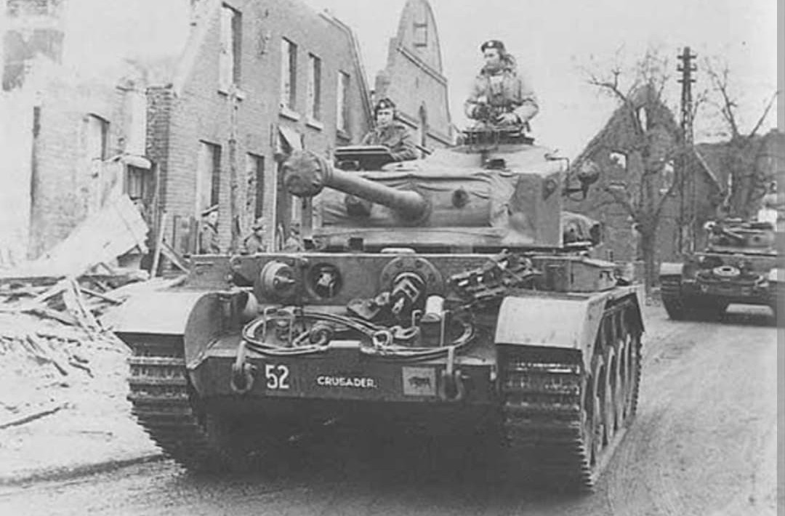
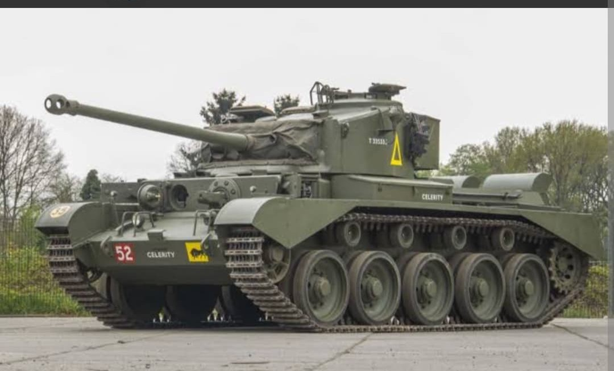
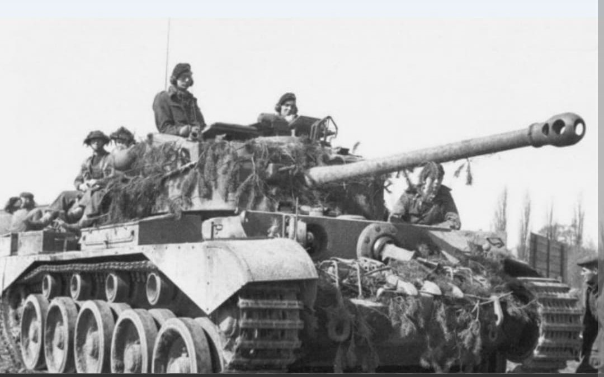

L'aboutissement ultime des chars de croisière britanniques, combinant haute vitesse et canon perforant de 77 mm HV

Le **Comet** (officiellement Cruiser Tank Comet I, A34) est considéré comme le meilleur char d'assaut britannique entré en service durant la Seconde Guerre mondiale.
Conçu pour combler les faiblesses du Cromwell face aux blindés lourds allemands, le Comet combinait la vitesse impressionnante de ses prédécesseurs à un nouveau canon puissant capable de percer les chars Panther et Tiger à distance de sécurité.
Développé par la firme **Leyland Motors**, le Comet dérive directement du châssis du Cromwell, mais bénéficie d'une structure entièrement renforcée et d'une nouvelle tourelle soudée plus vaste.
Sa véritable innovation repose sur son armement principal : le canon **77 mm HV (High Velocity)**, conçu par Vickers-Armstrongs. Basé sur le célèbre canon de 17 livres (17-pdr), ce canon utilise des douilles plus courtes pour tenir dans une tourelle standard de char, tout en conservant une vitesse initiale et une capacité de pénétration balistique exceptionnelles.

Les premiers exemplaires du Comet arrivent au front à la fin de l'année 1944 et équipent progressivement la 11e Division Blindée britannique à partir de début 1945.
Il participe activement aux opérations de franchissement du Rhin et à la poussée finale à travers l'Allemagne vers la Baltique. Ses équipages apprécient immédiatement sa fiabilité mécanique, sa vitesse de déplacement et l'efficacité redoutable de son canon 77 mm HV en duel antichar.

Bien qu'arrivé tardivement au combat (environ **1 200 exemplaires** produits avant la capitulation allemande), le Comet est largement considéré comme le char britannique le plus abouti du second conflit mondial.
Il reste en service au sein de la British Army pendant la guerre de Corée et n'est retiré du service actif qu'au cours des années 1950, cédant sa place au célèbre char de combat principal Centurion.
Page du Musée HOP WW2 – Section Véhicules Terrestres Britanniques